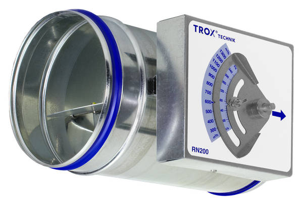
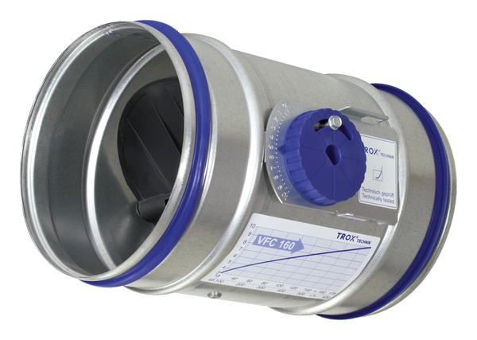
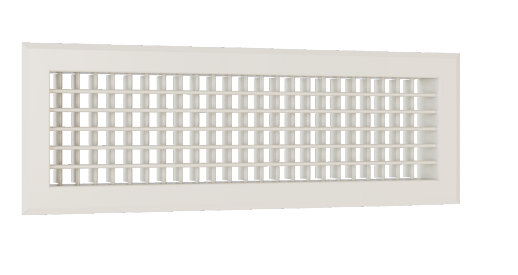
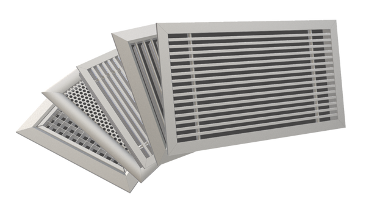

RN
Круглый механический регулятор постоянного расхода воздуха без внешнего питания.
- Ø 80–400 мм
- 40–5 040 м³/ч
- 50–1000 Па
- Точность шкалы ±4 %
- EN 1751 Class C · VDI 6022
CAV · ВОЗДУХОРАСПРЕДЕЛЕНИЕ
Механические регуляторы постоянного расхода воздуха и воздухораспределители для общеобменной вентиляции, технологических и специальных систем.
ПРОДУКТОВАЯ ЛИНЕЙКА
Подбор по расходу, типоразмеру, перепаду давления, акустике, варианту монтажа и требованиям к дизайну.

Круглый механический регулятор постоянного расхода воздуха без внешнего питания.

Прямоугольный механический CAV-регулятор для нормальных и высоких постоянных расходов.

Круглый самодействующий CAV-регулятор для систем с низкими скоростями воздуха.

Стальная вентиляционная решётка с индивидуально регулируемыми ламелями для притока и вытяжки.

Модульная алюминиевая решётка для приточного и вытяжного воздуха с большим выбором рамок, вставок и креплений.
ПРОЕКТНАЯ ПОДДЕРЖКА
Пришлите расход, типоразмеры, давление, акустические требования и спецификацию — подберём исполнение TROX и проверим совместимость.